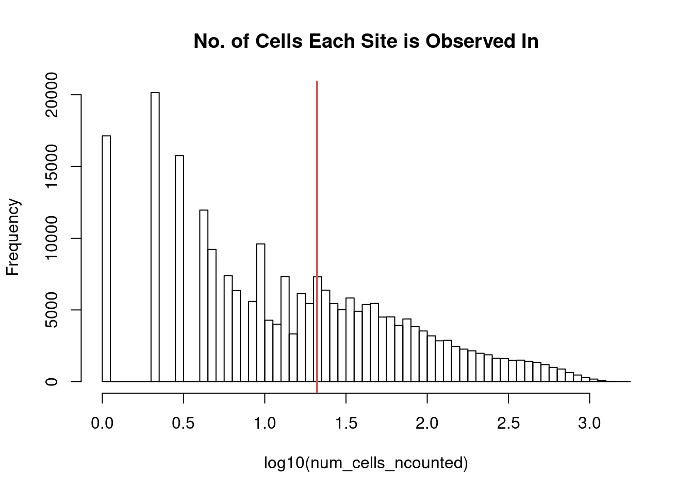

Last updated: 2020-11-05
Checks: 7 0
Knit directory: scATACseq-topics/
This reproducible R Markdown analysis was created with workflowr (version 1.6.2). The Checks tab describes the reproducibility checks that were applied when the results were created. The Past versions tab lists the development history.
Great! Since the R Markdown file has been committed to the Git repository, you know the exact version of the code that produced these results.
Great job! The global environment was empty. Objects defined in the global environment can affect the analysis in your R Markdown file in unknown ways. For reproduciblity it’s best to always run the code in an empty environment.
The command set.seed(20200729) was run prior to running the code in the R Markdown file. Setting a seed ensures that any results that rely on randomness, e.g. subsampling or permutations, are reproducible.
Great job! Recording the operating system, R version, and package versions is critical for reproducibility.
Nice! There were no cached chunks for this analysis, so you can be confident that you successfully produced the results during this run.
Great job! Using relative paths to the files within your workflowr project makes it easier to run your code on other machines.
Great! You are using Git for version control. Tracking code development and connecting the code version to the results is critical for reproducibility.
The results in this page were generated with repository version 1da32f8. See the Past versions tab to see a history of the changes made to the R Markdown and HTML files.
Note that you need to be careful to ensure that all relevant files for the analysis have been committed to Git prior to generating the results (you can use wflow_publish or wflow_git_commit). workflowr only checks the R Markdown file, but you know if there are other scripts or data files that it depends on. Below is the status of the Git repository when the results were generated:
Ignored files:
Ignored: .Rhistory
Ignored: .Rproj.user/
Untracked files:
Untracked: analysis/clusters_Buenrostro2018_k14.Rmd
Untracked: analysis/clusters_pca_structure_Cusanovich2018.Rmd
Unstaged changes:
Modified: analysis/compare_pca_clusters_Buenrostro_2018.Rmd
Modified: analysis/index.Rmd
Modified: analysis/plots_Lareau2019_bonemarrow.Rmd
Modified: scripts/fit_all_models_Lareau2019.sh
Note that any generated files, e.g. HTML, png, CSS, etc., are not included in this status report because it is ok for generated content to have uncommitted changes.
These are the previous versions of the repository in which changes were made to the R Markdown (analysis/process_data_Buenrostro2018.Rmd) and HTML (docs/process_data_Buenrostro2018.html) files. If you’ve configured a remote Git repository (see ?wflow_git_remote), click on the hyperlinks in the table below to view the files as they were in that past version.
| File | Version | Author | Date | Message |
|---|---|---|---|---|
| Rmd | 1da32f8 | kevinlkx | 2020-11-05 | set binarized counts as sparse matrix |
| html | 89b45be | kevinlkx | 2020-11-04 | Build site. |
| Rmd | 857e1e8 | kevinlkx | 2020-11-04 | process data from Buenrostro 2018 paper |
| html | 907fa65 | kevinlkx | 2020-11-04 | Build site. |
| Rmd | 12bf4b3 | kevinlkx | 2020-11-04 | process data from Buenrostro 2018 paper |
Reference: Buenrostro, J. D. et al. Integrated Single-Cell Analysis Maps the Continuous Regulatory Landscape of Human Hematopoietic Differentiation. Cell 173, 1535–1548.e16 (2018).
Data were downloaded from GEO: GSE96772
RCC directory: /project2/mstephens/kevinluo/scATACseq-topics/data/Buenrostro_2018/
Downloaded scATAC-seq processed data from GEO: GSE96769
GSE96769_PeakFile_20160207.bed.gzGSE96769_scATACseq_counts.txt.gzDownloaded processed data from the scATAC-benchmarking website (Chen et al. Genome Biology 2019) (https://github.com/pinellolab/scATAC-benchmarking/)
library(Matrix)
library(tools)
library(readr)
library(data.table)count scATAC-seq reads in peaks
sbatch ~/projects/scATACseq-topics/scripts/count_reads_peaks_Buenrostro_2018.sbatchcombine counts from all samples
dir_readcount_output <- '/project2/mstephens/kevinluo/scATACseq-topics/data/Buenrostro_2018/data/count_reads_peaks_output/'
files <- list.files(dir_readcount_output, pattern = "\\.txt$")
sample_names <- sapply(strsplit(files,'\\.'),'[', 1)
cat(length(sample_names), "samples. \n")2034 samples. datalist <- lapply(files, function(x)fread(file.path(dir_readcount_output,x))$V4)
counts <- do.call("cbind", datalist)data.dir <- "/project2/mstephens/kevinluo/scATACseq-topics/data/Buenrostro_2018/processed_data/"
dir.create(data.dir, showWarnings = FALSE, recursive = TRUE)
# saveRDS(counts, file.path(data.dir, "raw_counts_Buenrostro_2018.rds"))
counts <- readRDS(file.path(data.dir, "raw_counts_Buenrostro_2018.rds"))Processing count files (adapted from Chen et al. Genome Biology 2019 paper https://github.com/pinellolab/scATAC-benchmarking/blob/master/Real_Data/Buenrostro_2018/run_methods/Control/Control_buenrostro2018.ipynb)
peaks <- read.csv("/project2/mstephens/kevinluo/scATACseq-topics/data/Buenrostro_2018/data/input_Chen_2019/combined.sorted.merged.bed",
sep = '\t',header=FALSE,stringsAsFactors=FALSE)
peaknames <- paste(peaks$V1,peaks$V2,peaks$V3,sep = "_")
rownames(peaks) <- peaknames
cat(sprintf("Number of peaks: %d\n",nrow(peaks)))Number of peaks: 237450head(peaknames)[1] "chr1_10413_10625" "chr1_13380_13624" "chr1_16145_16354"
[4] "chr1_96388_96812" "chr1_115650_115812" "chr1_237625_237888"colnames(counts) <- sample_names
rownames(counts) <- peaknames
dim(counts)[1] 237450 2034Sample labels
samples <- read.table('/project2/mstephens/kevinluo/scATACseq-topics/data/Buenrostro_2018/data/input_Chen_2019/metadata.tsv', header = TRUE, stringsAsFactors=FALSE, quote="",row.names=1)
head(samples) label
BM1077-CLP-Frozen-160106-13 CLP
BM1077-CLP-Frozen-160106-14 CLP
BM1077-CLP-Frozen-160106-2 CLP
BM1077-CLP-Frozen-160106-21 CLP
BM1077-CLP-Frozen-160106-27 CLP
BM1077-CLP-Frozen-160106-3 CLPFilter peaks (filter out peaks with counts in < 1% samples)
# adapted from Chen et al. Genome Biology 2019 paper https://github.com/pinellolab/scATAC-benchmarking/blob/master/Real_Data/Buenrostro_2018/run_methods/Control/Control_buenrostro2018.ipynb
# filter peaks with counts in at least 1% samples
filter_peaks <- function (datafr,cutoff = 0.01){
binary_mat = as.matrix((datafr > 0) + 0)
binary_mat = Matrix(binary_mat, sparse = TRUE)
num_cells_ncounted = Matrix::rowSums(binary_mat)
ncounts = binary_mat[num_cells_ncounted >= dim(binary_mat)[2]*cutoff,]
ncounts = ncounts[rowSums(ncounts) > 0,]
options(repr.plot.width=4, repr.plot.height=4)
hist(log10(num_cells_ncounted),main="No. of Cells Each Site is Observed In",breaks=50)
abline(v=log10(min(num_cells_ncounted[num_cells_ncounted >= dim(binary_mat)[2]*cutoff])),lwd=2,col="indianred")
# hist(log10(new_counts),main="Number of Sites Each Cell Uses",breaks=50)
peaks_selected = rownames(ncounts)
return(peaks_selected)
}peaks_selected <- filter_peaks(counts)
| Version | Author | Date |
|---|---|---|
| 907fa65 | kevinlkx | 2020-11-04 |
counts <- counts[peaks_selected,]
peaks <- peaks[peaks_selected, ]
counts <- t(counts)
counts <- Matrix(counts, sparse = TRUE)
dim(counts)[1] 2034 101172Binarize counts
binarized_counts <- as.matrix((counts > 0) + 0)
binarized_counts <- Matrix(binarized_counts, sparse = TRUE)
dim(binarized_counts)[1] 2034 101172saveRDS(counts, file.path(data.dir, "counts_Buenrostro_2018.rds"))
saveRDS(binarized_counts, file.path(data.dir, "binarized_counts_Buenrostro_2018.rds"))
save(list = c("samples", "peaks", "counts"),
file = file.path(data.dir, "Buenrostro_2018_counts.RData"))
counts <- binarized_counts
save(list = c("samples", "peaks", "counts"),
file = file.path(data.dir, "Buenrostro_2018_binarized_counts.RData"))data.dir <- "/project2/mstephens/kevinluo/scATACseq-topics/data/Buenrostro_2018/processed_data/"
load(file.path(data.dir, "Buenrostro_2018_counts.RData"))
cat(sprintf("Loaded %d x %d counts matrix.\n",nrow(counts),ncol(counts)))Loaded 2034 x 101172 counts matrix.cat(sprintf("Number of samples (cells): %d\n",nrow(counts)))Number of samples (cells): 2034cat(sprintf("Number of peaks: %d\n",ncol(counts)))Number of peaks: 101172cat(sprintf("Proportion of counts that are non-zero: %0.1f%%.\n",
100*mean(counts > 0)))Proportion of counts that are non-zero: 6.2%.
sessionInfo()R version 3.6.1 (2019-07-05)
Platform: x86_64-pc-linux-gnu (64-bit)
Running under: Scientific Linux 7.4 (Nitrogen)
Matrix products: default
BLAS/LAPACK: /software/openblas-0.2.19-el7-x86_64/lib/libopenblas_haswellp-r0.2.19.so
locale:
[1] LC_CTYPE=en_US.UTF-8 LC_NUMERIC=C
[3] LC_TIME=en_US.UTF-8 LC_COLLATE=en_US.UTF-8
[5] LC_MONETARY=en_US.UTF-8 LC_MESSAGES=en_US.UTF-8
[7] LC_PAPER=en_US.UTF-8 LC_NAME=C
[9] LC_ADDRESS=C LC_TELEPHONE=C
[11] LC_MEASUREMENT=en_US.UTF-8 LC_IDENTIFICATION=C
attached base packages:
[1] tools stats graphics grDevices utils datasets methods
[8] base
other attached packages:
[1] data.table_1.12.8 readr_1.3.1 Matrix_1.2-18 workflowr_1.6.2
loaded via a namespace (and not attached):
[1] Rcpp_1.0.5 knitr_1.28 whisker_0.4 magrittr_1.5
[5] hms_0.5.3 lattice_0.20-38 R6_2.5.0 rlang_0.4.8
[9] stringr_1.4.0 grid_3.6.1 xfun_0.14 git2r_0.27.1
[13] ellipsis_0.3.1 htmltools_0.4.0 yaml_2.2.0 digest_0.6.27
[17] rprojroot_1.3-2 lifecycle_0.2.0 tibble_3.0.4 crayon_1.3.4
[21] later_1.0.0 vctrs_0.3.4 promises_1.1.0 fs_1.3.1
[25] glue_1.4.2 evaluate_0.14 rmarkdown_2.1 stringi_1.4.6
[29] pillar_1.4.6 compiler_3.6.1 backports_1.1.10 httpuv_1.5.3.1
[33] pkgconfig_2.0.3